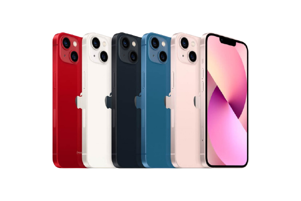
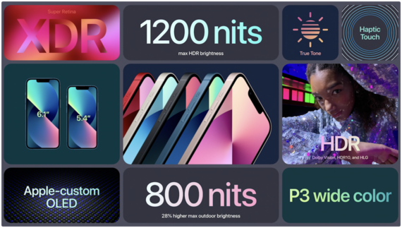
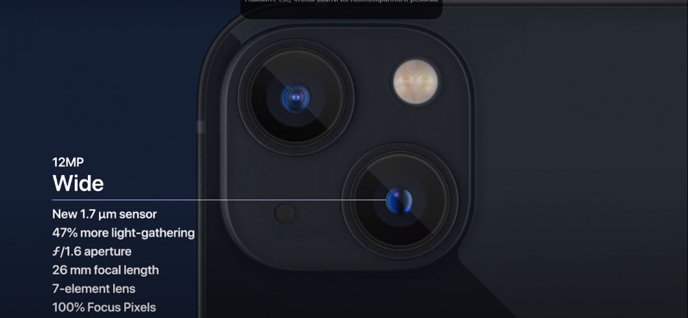

Презентація нового Iphone
Apple представила смартфон iPhone 13 восени 14 вересня 2021 року.
Базовий 6,1-дюймовий айфон традиційно найцікавіший - по-перше, він не такий дорогий, як пробки.
По-друге, він отримав незвичайну камеру з діагональним розташуванням датчиків (з попереднім поколінням не сплутаєш). - Iphone 13

Ціна
- IPhone 13 на 128 ГБ — 28 999 грн.
- iPhone 13 на 256 ГБ - 32 999 грн.
- iPhone 13 на 512 ГБ - 53 999 грн.
Процессор
Уся лінійка iPhone 13 буде оснащена могутнім Apple A15 Bionic.
Це 5-нм SoC. У чому перевага? У цифрах у тестах, а також в енергоефективності (а це важливо з огляду на те, що нові айфони отримають екрани з частотою оновлення 120 Гц).
Працюватиме смартфон швидко.
Дисплей
Розмір той самий, що і iPhone - це 6,1-дюймова OLED-панель зі зменшеним споживанням енергії приблизно на 20%. Нормально. Навіть чудово. А що нового?
У базового iPhone 13 нічого ...
Частота оновлення ті ж застарілі 60 Гц. Динамічний LTPO-дисплей на 120 Гц, та ще й з адаптивною частотою оновлення призначений тільки прошкам.

Камери
У iPhone 13 використано новий модуль камери з діагональним розташуванням датчиків. Об'єктиви стали більшими. А це означає, що вони захоплюють більше світла. Аж на 47%!
Більше світла — краща якість знімків. Особливо, якщо йдеться про нічну зйомку.
Камера, як і раніше, подвійна. Є оптична стабілізація із зсувом матриці. Нічний режим підтримують усі датчики.

Аккумулятор
Хворе місце будь-якого айфону – маленька батарея. Чи виправили це в iPhone 13? Ні. Але акумулятор став більшим, ніж у iPhone 12,замість 2815 мА * год всередині батарея на 3095 мА * год.
Работает iPhone 13 на 2,5 часа дольше, чем iPhone 12. Швидка зарядка? Буде. Потужність? Навряд чи нижче за 30 Вт. Бездротова? Не більше ніж 15 Вт. Не забуваємо про магнітну зарядку MagSafe.
.png)
Пам'ять
Apple не стала зберігати версію із накопичувачем на 64 ГБ. Базовим варіантом став смартфон із 128 ГБ флеш-пам'яті. Топова версія тепер оснащується 512 ГБ. Втім, якщо вам не вистачає пам'яті, iCloud допоможе!